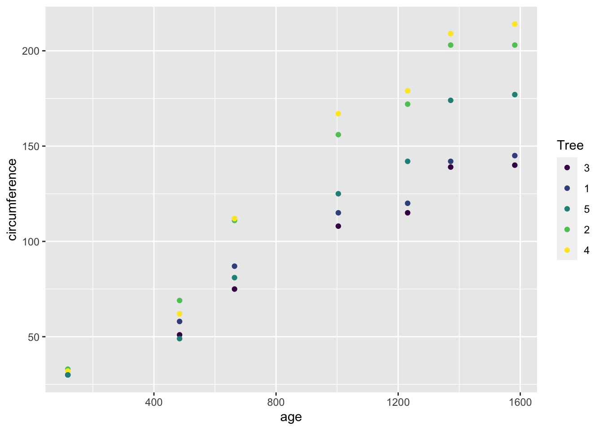

re_model = lmer(Reaction ~ Days + (1|Subject), data=sleepstudy)Fixed and Random Effects
We have looked at several examples of regression models. For the examples, I have intentionally chosen data with a pretty simple structure: all of the observations are independent, with differences in the outcomes attributed to either the treatment effects or to random noise.
Fixed effects
The effects we’ve seen so far are often called “fixed effects”. That’s because the treatment is expected to have the same effect if the experiment were repeated. That fixed value is in contrast to “random effects”, which are taken from a random distribution and are expected to be different in a hypothetical repetition of the experiment.
Random effects
Real-world science often sees data grouped according to some known structure of the study. For instance, in an agricultural experiment, the yield of plants from the same field is generally more alike than plants from different fields, even fields that received the same treatment. Why? Maybe the soil was generally better quality in one field, or one got more rain than the other, or the treatments weren’t applied perfectly consistently between fields.
In order to account for factors like these, agricultural experiments often divide a field into plots, and apply different treatments in each plot. In that case, the yields from the same plot are more alike than from other plots, even on the same field. But they are generally more alike within the same field than plots from different fields. This is an example of hierarchical data: there are several individual measurements of yield from plants in each plot. We say that the measurements are nested within the plots, and meanwhile the plots are nested within fields.
Random effects
Random effects are a way to account for variation in data that arises due to grouping or clustering of observations. They are used in regression models when there is a hierarchy or structure in the data, and the observations within each group are expected to be correlated.
For example, in a study involving students from different schools, random effects can be used to capture the inherent differences between schools, which may affect the dependent variable (e.g., test scores). Random effects are modeled as deviations from the overall population-level effects.
Using random effects in regression
There are several R packages that implement random effects in regression. lme4 is the most-used and brms is the Bayesian equivalent (which also offers some great features that aren’t available in lme4.) Both of them write the model in just about the same way as the lm() and glm() functions that you’ve already seen. The only difference is that the random effects need to be specified using a special notation: they are written as two parts wrapped in parentheses. The first part indicates the effect that changes with the grouping factor, and the second part indicates what variable is the grouping factor.
# Predict the fitted values from the mixed-effects model
sleepstudy$fitted_reaction <- predict(re_model)
# Create a scatterplot of fitted reaction times against Days
ggplot(sleepstudy) +
aes(x = Days, y = fitted_reaction, color = Subject) +
# geom_point() +
geom_line() +
labs(title = "Fitted Reaction Time vs. Days by Subject",
x = "Days",
y = "Fitted Reaction Time (ms)") +
geom_point(data=sleepstudy, mapping=aes(x=Days, y=Reaction, color=Subject))
Random intercepts and slopes
The most common kind of random effect is a random intercept. That means the effect of a grouping level is a consistent adjustment (increase or decrease) to the response. But random effects can be more complicated, such random slopes - where the effect of a continuous variable changes according to the grouping variable. Here’s an example using the sleep study data: the difference is that now the random effect of subject is not only that each subject was has somewhat quicker or slower reflexes that change by the same amount each day. Instead, each subject has somewhat quicker or slower reflexes that change by a personally unique amount each day (meanwhile, we have still estimated the fixed effect of days - which is the amount that an average person’s reaction time slowed down with each day of sleep deprivation.
random_slope_model = lmer(Reaction ~ Days + (1 + Days|Subject), data=sleepstudy)Looking at the plot of random effects, we see that the people with the quickest reactions also were less affected by sleep deprivation (lowest lines have the flattest slopes), and the people with the slowest reactions also were most affected by sleep deprivation (highest lines have the steepest slopes.)
# Predict the fitted values from the mixed-effects model
sleepstudy$random_slope_fitted <- predict(random_slope_model)
# Create a scatterplot of fitted reaction times against Days
ggplot(sleepstudy) +
aes(x = Days, y = random_slope_fitted, color = Subject) +
# geom_point() +
geom_line() +
labs(title = "Fitted Reaction Time vs. Days by Subject",
x = "Days",
y = "Fitted Reaction Time (ms)") +
geom_point(data=sleepstudy, mapping=aes(x=Days, y=Reaction, color=Subject))
This is also seen in the model summary, where there is a (slightly) positive correlation between the random slope and random intercept.
summary(random_slope_model)Linear mixed model fit by REML ['lmerMod']
Formula: Reaction ~ Days + (1 + Days | Subject)
Data: sleepstudy
REML criterion at convergence: 1743.6
Scaled residuals:
Min 1Q Median 3Q Max
-3.9536 -0.4634 0.0231 0.4634 5.1793
Random effects:
Groups Name Variance Std.Dev. Corr
Subject (Intercept) 612.10 24.741
Days 35.07 5.922 0.07
Residual 654.94 25.592
Number of obs: 180, groups: Subject, 18
Fixed effects:
Estimate Std. Error t value
(Intercept) 251.405 6.825 36.838
Days 10.467 1.546 6.771
Correlation of Fixed Effects:
(Intr)
Days -0.138When to use fixed vs random effects
There isn’t a single, definitive check that will tell you when to use random or fixed effects. I have come to think of random effects as a form of “partial pooling” - a way to do something between te extremes of either treating each observation as independent, or fully pooling all observations of each group by only using group means as data. With random effects, the amount of pooling is adaptive: where the differences between groups are large compared to the difference between observations within a group, then the random effect for group will have a big influence. But where the differences between individual observations is large compared to
Examples:
Orange trees
For this example, we will look at the growth of orange trees. The data is in the built-in dataset Orange, which you can import via \(data(Orange)\). There are three columns: Tree, which is an ID of which orange tree is being measured; age, which is the number of days since Deember 31, 1969; and circumference, which is the circumference of the tree’s trunk (in mm). There are five trees with seven observations each, so 35 rows of data. First, plot the data:
# plot the orange tree data
ggplot(Orange) +
aes(x=age, y=circumference, color=Tree) +
geom_point()
This looks like (fairly) linear growth with the same intercept (all the trees appear to have circumference zero at day zero) but slightly different growth rates. So let’s use a random slope model.
model_orange = lmer(circumference ~ (age - 1 | Tree), data=Orange)
summary(model_orange)Linear mixed model fit by REML ['lmerMod']
Formula: circumference ~ (age - 1 | Tree)
Data: Orange
REML criterion at convergence: 289.3
Scaled residuals:
Min 1Q Median 3Q Max
-1.9824 -0.5130 -0.0082 0.7997 1.6243
Random effects:
Groups Name Variance Std.Dev.
Tree age 0.01172 0.1082
Residual 100.93833 10.0468
Number of obs: 35, groups: Tree, 5
Fixed effects:
Estimate Std. Error t value
(Intercept) 17.913 3.642 4.918